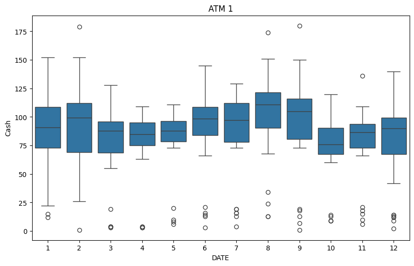
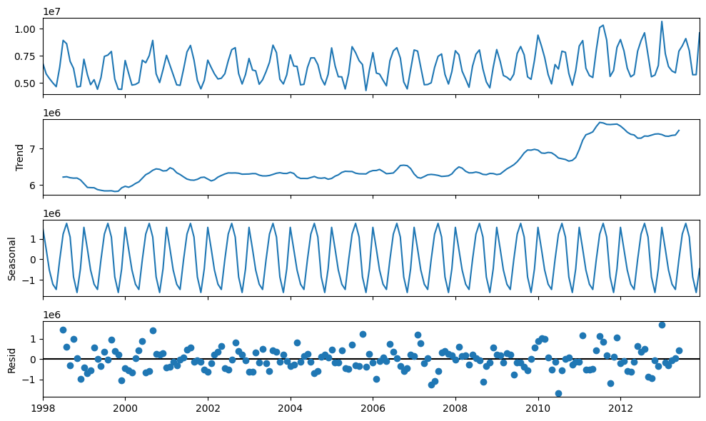

develop accurate forecasts of cash withdrawals for four distinct ATM machines during the month of May 2010.
develop forecasts of residential power consumption for the year 2014
Deliverables:
Report: documenting the data exploration findings, the rationale behind the chosen modeling techniques, the evaluation metrics employed, and a discussion of the final forecasts with accompanying visualizations.
Excel File: containing the final cash withdrawal forecasts in a clear, accessible format
Part A : ATM Data
Exploratory Data Analysis / Data Cleaning
ATM data has four unique ATMs and a Cash column that represents the amount of cash taken out in the day in hundreds of dollars. For instance, ATM1 on 2009-05-01 had $9600 taken out.
# show dataatm_df
ATM
Cash
DATE
2009-05-01
ATM1
96.000000
2009-05-01
ATM2
107.000000
2009-05-02
ATM1
82.000000
2009-05-02
ATM2
89.000000
2009-05-03
ATM1
85.000000
...
...
...
2010-04-26
ATM4
403.839336
2010-04-27
ATM4
13.697331
2010-04-28
ATM4
348.201061
2010-04-29
ATM4
44.245345
2010-04-30
ATM4
482.287107
1474 rows × 2 columns
Our data has 1484 observations and two columns of the Cash amount and the ATM. We notice that there are missing values in our data. We have 14 missing ATMs and 19 missing cash amounts. We will do the following:
Remove the missing ATMs since without additional information such as location, guessing which ATMs is which is not feasible.
Impute the missing Cash amount by ATM meaning we first groupby ATMs 1,2,3 and 4 then aggregate the mean of each subgroup. Afterwards, if that subgroup has missingness then we impute by the mean of their respectives group.
Notice, the statistical summary of each ATMs are unique which suggest that we should treat these ATMs are independent from each other.
Here, we have the visualization of each ATM to better understand its patterns. ATM4 shows a farawayoutlier where we will consider removal or some imputation.
ATM 1 has an average withdrawal amount $8 300 per day and the highest amount withdrawn in a day was $18 000.
ATM 1 peaks during the summer and winter months. For ARIMA models, ATM 1’s is already stationary so we will not need to difference it when building an SARIMA model. It has weekly seasonality as confirmed by the AFC plot which is indicates that a SARIMA model is appropriate to use.
atm1.describe().T
count
mean
std
min
25%
50%
75%
max
Cash
365.0
83.88674
36.505169
1.0
73.0
90.0
108.0
180.0
adfuller_test(atm1.Cash)
ADF Statistic: -3.110510
p-value: 0.025785
Critical Values:
1%: -3.449
5%: -2.870
10%: -2.571
Result: The series is stationary
sns.boxplot(data = atm1, x = atm1.index.month, y ='Cash')plt.title('ATM 1')plt.show()

plot_acf(atm1['Cash'], lags=30)plt.show()
seasonal_decompose(atm1['Cash'], model ='mul', period=7).plot()plt.show()
ATM 2
Here, we have an average withdrawlal of $6200 and a max of $14 700. Unlike ATM 1, ATM 2 does not have stationary data so some order of differencing is needed.
atm2.describe().T
count
mean
std
min
25%
50%
75%
max
Cash
365.0
62.578512
38.791444
0.0
26.0
66.0
93.0
147.0
adfuller_test(atm2.Cash)
ADF Statistic: -2.588113
p-value: 0.095479
Critical Values:
1%: -3.449
5%: -2.870
10%: -2.571
Result: The series is not stationary
sns.boxplot(data = atm2, x = atm2.index.month, y ='Cash')plt.title('ATM 2')plt.show()
plot_acf(atm2['Cash'], lags=30)plt.show()
seasonal_decompose(atm2['Cash'] +0.0001, model ='mul', period=7).plot()plt.show()
ATM 3
ATM 3 recorda almost zero withdrawals from the past year. It could be due to very low traffic in its location or the machine was broken. The last three records of the data are the only non-zero values. Using the data from this ATM is not enough to use for statistical learning.
atm3.query('Cash > 0')
ATM
Cash
DATE
2010-04-28
ATM3
96.0
2010-04-29
ATM3
82.0
2010-04-30
ATM3
85.0
atm3.describe().T
count
mean
std
min
25%
50%
75%
max
Cash
365.0
0.720548
7.944778
0.0
0.0
0.0
0.0
96.0
atm3.plot()plt.show()
adfuller_test(atm2.Cash)
ADF Statistic: -2.588113
p-value: 0.095479
Critical Values:
1%: -3.449
5%: -2.870
10%: -2.571
Result: The series is not stationary
sns.boxplot(data = atm3, x = atm3.index.month, y ='Cash')plt.title('ATM 3')plt.show()
ATM 4
ATM 4 has an extreme outlier where we will impute with the second value of the time series because we want to keep that attribute of that day having a high cash withdrawal.
In this section, we will create SARIMA models and Exponential Smoothing models such as the simple exponential smoothing, Holt’s Exponential and Holt-Winters models. The performance metrics we will use are RMSE, MSE, and MAE. Moreover, we use rolling window time series cross validation so that the test data is always the future values from the training set. For ATM 1,2, and 4 we will use there methods to find the best model to forecast May 2010.
For ATM 3, recall that out of 365 observations, only the last three values were non-zeros. Therefore, due to the lack of non-zero data we will forecast ATM3 with a Naive approach. ATM3 distribution represents a degenerate distribution which is difficult for a training model to learn from.
We created two functions to streamline the model building process:
* `arima_model_evaulation`
* `exponential smoothing_evaluation` function
These functions are similar where it both takes in dataset and has a default value for the train-test split of 80-20 and performs a KFold CV to find the best model for the data then reutrna dataframe for 3 models with the calculated MSE,RMSE, and MAE values.
For ATM 1, SARIMA(3,1,1)[5,1,1,7] had lower MSE and MAE than the Holt-Winter Model so we weill choose this model to forecast the value for May 2010. Although, this SARIMA model had the highest AIC and BIC value means that it has the worse fit on the data but had the better predictive capabilites.
Models for ATM2
atm2.drop('ATM', inplace=True, axis=1)
n =int(len(atm2) *0.8 )train2, test2 = atm2.iloc[:n], atm2.iloc[n:]
For ATM2, SARIMA(2,1,0)[5,1,2,7] has the lowest error values among the SARIMA models but has the high AIC and BIC values similar to ATM1’s SARIMA models. As for the Holt-winter models, it has higher error scores compared to the SARIMA model. Therefore, we will choose SARIMA(2,1,0)[5,1,2,7] to forecast MAy 2010.
ATM4 data, we had the most trouble with this data since our models are a difficult time capture the nature of this data. We tried multiple different power transformations. At the end using the log() transform gave us the best model in terms of MSE, RMSE and MAE.
We chose the Holt-Winter Model to forecast May 2010 since it had marginal better performance metrics compared to the SARIMA models. Even with cross validation to find the optimal paratameters for the SARIMA model, the Holt- Winters model performed better on average.
Forecasts
This is a great question, as it highlights the need to align your statistical analysis with real-world decision-making! Choosing between the average or maximum for cash replenishment in an ATM depends on a few factors:
Risk Tolerance:
Risk-Averse: If minimizing the chance of running out of cash is the top priority, suggest the maximum amount forecast by your model. This provides a buffer against unexpected surges in usage. Moderate Risk: Consider a value slightly above the average forecast. This balance might be appropriate if cost-efficiency is also a concern. 2. Cost vs. Risk:
High Cost of Running Out: If running out of cash incurs significant costs (e.g., customer dissatisfaction, lost revenue, service fees), err on the side of caution by suggesting a higher value closer to the maximum. High Cost of Holding Excess Cash: If there’s a substantial cost associated with keeping extra cash in the ATM (lost opportunity cost, security concerns), a value closer to the average might be more suitable. 3. Forecasting Accuracy and Confidence Intervals:
Reliable Forecasts: If your model is highly accurate, and the prediction intervals are narrow, using the average forecast with a small buffer might be reasonable. Uncertain Forecasts: If prediction intervals are wide, indicating greater uncertainty, lean towards a higher value (closer to the maximum) to ensure availability. Communicating to Decision Makers:
Don’t Just Give a Number: Explain your reasoning behind whatever value you suggest. Visualize the Forecast: Show a plot of your forecast along with potential confidence intervals. Quantify the Risk: If possible, estimate the probability of running out of cash at different suggested amounts. This makes the trade-off between risk and cost tangible. Contextualize: Help decision-makers understand the historical patterns and any upcoming events that might affect demand. Example Conversation:
“My forecast suggests that the average daily cash withdrawal for next week is likely to be around $X. However, I recommend stocking the ATM with $Y (closer to the maximum forecast) for these reasons:
[Reason 1 - e.g., There’s an upcoming event in the area that might increase demand] [Reason 2 - e.g., My model has some uncertainty, and this amount lowers our risk of running out of cash]
ATM1 Model : SARIMA(3,1,1)[5,1,1,7]
ATM2 Model : SARIMA(2,1,0)[5,1,2,7]
ATM3 Model : Naive Model
ATM4 Model : Holt-Winters Model
Forecast 31 time steps out of the sample since May 2010 has 31 days.
So, there was one missing value at September 2008. We can impute the NA values with median of the data since it more resistant to outliers. Also, replace the outlier with median.
C:\Users\nickc\AppData\Local\Temp\ipykernel_34840\2671974967.py:1: SettingWithCopyWarning:
A value is trying to be set on a copy of a slice from a DataFrame
See the caveats in the documentation: https://pandas.pydata.org/pandas-docs/stable/user_guide/indexing.html#returning-a-view-versus-a-copy
power_df.loc['2010-07-01', 'KWH'] = power_df['KWH'].median()
ADF Statistic: -0.259931
p-value: 0.930991
Critical Values:
1%: -3.467
5%: -2.878
10%: -2.575
Result: The series is not stationary
adfuller_test(power_df['KWH'].diff().dropna())
ADF Statistic: -12.385605
p-value: 0.000000
Critical Values:
1%: -3.467
5%: -2.878
10%: -2.575
Result: The series is stationary
So, the data requires differencing. After, differing it once the data becomes stationary.
seasonal_decompose(power_df).plot()plt.show()

plot_acf(power_df['KWH'])plt.show()
plot_pacf(power_df['KWH'])plt.show()
sns.boxplot(data = power_df, x = power_df.index.month, y ='KWH')plt.title('KWH per Month')plt.grid(True)plt.show()
Based on the boxplot, power consumption peaks during the summer and winter months where residents are using the their power on AC units in the summer and heating in the winter.
power_df.describe().T
count
mean
std
min
25%
50%
75%
max
KWH
192.0
6.530046e+06
1.382828e+06
4313019.0
5443502.5
6283324.0
7608791.75
10655730.0
sns.histplot(data=power_df, x='KWH', kde=True)plt.title('Distribution of Power Consumption')plt.xlabel('KWH')plt.ylabel('Frequency')plt.show()
power_df is centered around 0.6 KWH for the past 15 years of recorded data.
Model Building and Selection
Using the SARIMA and Exponential Smoothing techniques for forecasting.
SARIMA Models
power_sarima = arima_model_evaluation(power_df['KWH'], m =12, D =0)power_sarima
Model
Order
Seasonal
MSE
RMSE
MAE
AIC
BIC
0
SARIMA 1
(0, 1, 0)
(1, 0, 0, 12)
1.199599e+12
1.095262e+06
958391.377650
1163.163395
1166.438568
1
SARIMA 2
(2, 1, 2)
(1, 0, 1, 12)
7.846986e+11
8.858321e+05
688698.541995
2297.379262
2313.694395
2
SARIMA 3
(2, 1, 2)
(1, 0, 1, 12)
4.982655e+11
7.058792e+05
554137.035650
3440.197793
3459.351182
SARIMA is able to predict new data well while not overfitting the model on the training data.
c:\Users\nickc\DataScience\.venv\Lib\site-packages\statsmodels\tsa\base\tsa_model.py:473: ValueWarning: No frequency information was provided, so inferred frequency MS will be used.
self._init_dates(dates, freq)
c:\Users\nickc\DataScience\.venv\Lib\site-packages\statsmodels\tsa\holtwinters\model.py:917: ConvergenceWarning: Optimization failed to converge. Check mle_retvals.
warnings.warn(
c:\Users\nickc\DataScience\.venv\Lib\site-packages\statsmodels\tsa\base\tsa_model.py:473: ValueWarning: No frequency information was provided, so inferred frequency MS will be used.
self._init_dates(dates, freq)
c:\Users\nickc\DataScience\.venv\Lib\site-packages\statsmodels\tsa\holtwinters\model.py:917: ConvergenceWarning: Optimization failed to converge. Check mle_retvals.
warnings.warn(
c:\Users\nickc\DataScience\.venv\Lib\site-packages\statsmodels\tsa\base\tsa_model.py:473: ValueWarning: No frequency information was provided, so inferred frequency MS will be used.
self._init_dates(dates, freq)
c:\Users\nickc\DataScience\.venv\Lib\site-packages\statsmodels\tsa\holtwinters\model.py:917: ConvergenceWarning: Optimization failed to converge. Check mle_retvals.
warnings.warn(
c:\Users\nickc\DataScience\.venv\Lib\site-packages\statsmodels\tsa\base\tsa_model.py:473: ValueWarning: No frequency information was provided, so inferred frequency MS will be used.
self._init_dates(dates, freq)
c:\Users\nickc\DataScience\.venv\Lib\site-packages\statsmodels\tsa\holtwinters\model.py:917: ConvergenceWarning: Optimization failed to converge. Check mle_retvals.
warnings.warn(
c:\Users\nickc\DataScience\.venv\Lib\site-packages\statsmodels\tsa\base\tsa_model.py:473: ValueWarning: No frequency information was provided, so inferred frequency MS will be used.
self._init_dates(dates, freq)
c:\Users\nickc\DataScience\.venv\Lib\site-packages\statsmodels\tsa\holtwinters\model.py:917: ConvergenceWarning: Optimization failed to converge. Check mle_retvals.
warnings.warn(
c:\Users\nickc\DataScience\.venv\Lib\site-packages\statsmodels\tsa\base\tsa_model.py:473: ValueWarning: No frequency information was provided, so inferred frequency MS will be used.
self._init_dates(dates, freq)
c:\Users\nickc\DataScience\.venv\Lib\site-packages\statsmodels\tsa\holtwinters\model.py:917: ConvergenceWarning: Optimization failed to converge. Check mle_retvals.
warnings.warn(
c:\Users\nickc\DataScience\.venv\Lib\site-packages\statsmodels\tsa\base\tsa_model.py:473: ValueWarning: No frequency information was provided, so inferred frequency MS will be used.
self._init_dates(dates, freq)
c:\Users\nickc\DataScience\.venv\Lib\site-packages\statsmodels\tsa\holtwinters\model.py:917: ConvergenceWarning: Optimization failed to converge. Check mle_retvals.
warnings.warn(
c:\Users\nickc\DataScience\.venv\Lib\site-packages\statsmodels\tsa\base\tsa_model.py:473: ValueWarning: No frequency information was provided, so inferred frequency MS will be used.
self._init_dates(dates, freq)
c:\Users\nickc\DataScience\.venv\Lib\site-packages\statsmodels\tsa\holtwinters\model.py:917: ConvergenceWarning: Optimization failed to converge. Check mle_retvals.
warnings.warn(
c:\Users\nickc\DataScience\.venv\Lib\site-packages\statsmodels\tsa\base\tsa_model.py:473: ValueWarning: No frequency information was provided, so inferred frequency MS will be used.
self._init_dates(dates, freq)
c:\Users\nickc\DataScience\.venv\Lib\site-packages\statsmodels\tsa\holtwinters\model.py:917: ConvergenceWarning: Optimization failed to converge. Check mle_retvals.
warnings.warn(
c:\Users\nickc\DataScience\.venv\Lib\site-packages\statsmodels\tsa\base\tsa_model.py:473: ValueWarning: No frequency information was provided, so inferred frequency MS will be used.
self._init_dates(dates, freq)
c:\Users\nickc\DataScience\.venv\Lib\site-packages\statsmodels\tsa\holtwinters\model.py:917: ConvergenceWarning: Optimization failed to converge. Check mle_retvals.
warnings.warn(
c:\Users\nickc\DataScience\.venv\Lib\site-packages\statsmodels\tsa\base\tsa_model.py:473: ValueWarning: No frequency information was provided, so inferred frequency MS will be used.
self._init_dates(dates, freq)
c:\Users\nickc\DataScience\.venv\Lib\site-packages\statsmodels\tsa\holtwinters\model.py:917: ConvergenceWarning: Optimization failed to converge. Check mle_retvals.
warnings.warn(
c:\Users\nickc\DataScience\.venv\Lib\site-packages\statsmodels\tsa\base\tsa_model.py:473: ValueWarning: No frequency information was provided, so inferred frequency MS will be used.
self._init_dates(dates, freq)
c:\Users\nickc\DataScience\.venv\Lib\site-packages\statsmodels\tsa\holtwinters\model.py:917: ConvergenceWarning: Optimization failed to converge. Check mle_retvals.
warnings.warn(
c:\Users\nickc\DataScience\.venv\Lib\site-packages\statsmodels\tsa\base\tsa_model.py:473: ValueWarning: No frequency information was provided, so inferred frequency MS will be used.
self._init_dates(dates, freq)
c:\Users\nickc\DataScience\.venv\Lib\site-packages\statsmodels\tsa\holtwinters\model.py:917: ConvergenceWarning: Optimization failed to converge. Check mle_retvals.
warnings.warn(
c:\Users\nickc\DataScience\.venv\Lib\site-packages\statsmodels\tsa\base\tsa_model.py:473: ValueWarning: No frequency information was provided, so inferred frequency MS will be used.
self._init_dates(dates, freq)
c:\Users\nickc\DataScience\.venv\Lib\site-packages\statsmodels\tsa\holtwinters\model.py:917: ConvergenceWarning: Optimization failed to converge. Check mle_retvals.
warnings.warn(
c:\Users\nickc\DataScience\.venv\Lib\site-packages\statsmodels\tsa\base\tsa_model.py:473: ValueWarning: No frequency information was provided, so inferred frequency MS will be used.
self._init_dates(dates, freq)
c:\Users\nickc\DataScience\.venv\Lib\site-packages\statsmodels\tsa\holtwinters\model.py:917: ConvergenceWarning: Optimization failed to converge. Check mle_retvals.
warnings.warn(
c:\Users\nickc\DataScience\.venv\Lib\site-packages\statsmodels\tsa\base\tsa_model.py:473: ValueWarning: No frequency information was provided, so inferred frequency MS will be used.
self._init_dates(dates, freq)
df_power_forecasts_holt_winters = pd.DataFrame(power_forecasts_holt_winters.values, index = power_forecasts_holt_winters.index, columns = ['KWH'])df_power_forecasts_holt_winters
KWH
2014-01-01
1.005065e+07
2014-02-01
8.596080e+06
2014-03-01
7.051000e+06
2014-04-01
6.238878e+06
2014-05-01
5.960655e+06
2014-06-01
7.953689e+06
2014-07-01
9.103111e+06
2014-08-01
9.955047e+06
2014-09-01
8.742001e+06
2014-10-01
6.326984e+06
2014-11-01
6.024963e+06
2014-12-01
7.672234e+06
df_power_forecasts_holt_winters.to_excel('Power_Forecasts.xlsx', index =False)
Appendix
# repeat function each ATM to maKE SARIMA modelsdef arima_model_evaluation(df: pd.DataFrame, size: float=0.8, m =7, D =1) ->None: train_size =int(len(df) * size) train, test = df[:train_size], df[train_size:] tscv = TimeSeriesSplit(n_splits=3) # cross validation : approach Rolling window. test data must always be the future data from the training set. why? prevents data leakage mse_list = [] rmse_list = [] mae_list = [] order_list = [] seasonal_order_list = [] aic_list = [] bic_list = []for train_index, val_index in tscv.split(train): train_data, val_data = train.iloc[train_index], train.iloc[val_index] model = auto_arima(train_data, start_p =0, start_q =0, max_p =10, max_q =10, d =1, seasonal=True, start_P =0, start_Q =0, max_P =5, max_Q =5, max_order =None, # removes limit of p+q+P+Q m = m, D = D, stepwise =True, error_action ='ignore', scoring ='mse') predictions = model.predict(len(val_data)) # same size as test data mse = mean_squared_error(val_data, predictions) rmse = np.sqrt(mse) mae = mean_absolute_error(val_data, predictions) order_list.append(model.order) seasonal_order_list.append(model.seasonal_order) mse_list.append(mse) rmse_list.append(rmse) mae_list.append(mae) aic_list.append(model.aic()) bic_list.append(model.bic()) avg_mse = np.mean(mse_list) avg_rmse = np.mean(rmse_list) avg_mae = np.mean(mae_list) evaluation_df = pd.DataFrame({'Model': ['SARIMA 1', 'SARIMA 2', 'SARIMA 3'],'Order' : order_list,'Seasonal' : seasonal_order_list,'MSE': mse_list,'RMSE': rmse_list,'MAE': mae_list,'AIC': aic_list,'BIC' : bic_list })return evaluation_df